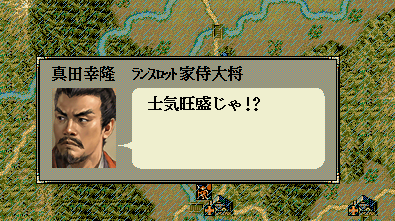

この節では、とにかくScenarioModのソースを実際にいじくってみて、感覚をつかみます。
前節のソースを見てください。
これを少し編集することで、まずは、感覚を掴みましょう。
string カスタム::On_噴出メッセージ直前(string 武将名, string 元メッセージ, メッセージ関連情報型 メッセージ関連情報) {
if (武将名 == "真田幸隆") {
return "マジかよ…最悪だぉ!!";
}
// 変更しない場合""
return "";
}
まず、常に「マジかよ…最悪だぉ｣と言ってるのをなんとか直したいところです。
そうです、戦場で士気MAX時に｢鼓舞｣をした時のメッセージだけ、
書き換えるようにしてみましょう!!
でも、戦場での鼓舞とは、元々どんなメッセージだったでしょうか？
Message.n6pをLS11Archieveで解凍するのが正確なメッセージを知る方法ですが、
今回は練習ですので簡略的に 天翔記 Wikiに掲載されているセリフ を参照してみましょう。
どうやら士気MAX時にいうセリフは
「わが隊はすでに(改行)士気旺盛…鼓舞する(改行)必要…(以下メッセージが分かれる)」
といったことになっているようです。
天翔記内には他に似たようなメッセージもないようですから、
「 わが隊はすでに(改行)士気旺盛 」
ぐらいまで含まれれば、ちゃんと 士気MAX時のメッセージに絞ることが出来そうです。
では、そうしてみましょう。
string カスタム::On_噴出メッセージ直前(string 武将名, string 元メッセージ, メッセージ関連情報型 メッセージ関連情報) {
if (武将名 == "真田幸隆") {
if (Is_文字列マッチ(元メッセージ, "わが隊はすでに\x0A士気旺盛")) {
return "士気旺盛じゃ!?";
}
}
// 変更しない場合""
return "";
}
プログラム未経験者の方は、いきなりのことで「げげ!!」と思われる方もいるかもしれません。
しかし、 ｢メッセージ中に『ほげほげ』な文字が含まれる」というのは、このように書くものだ と覚えてしまうのも手でしょう。
『 \x0A 』は(ｴﾝ ｴｯｸｽ ｾﾞﾛ ｴｰ)となります。(ｵｰ ｴｰ)ではないので注意して下さい。
さて、
このあたりは、｢ビルド」の項目を見返して下さい。
セーブデータエディタなどで、真田幸隆の兵士を100、兵士の忠誠度(=士気)を98など、動作を確認しやすい状況にして、確認してみましょう。

最後にこのメッセージ変更が｢天気｣によって内容を分岐するようにしてみましょう。
string カスタム::On_噴出メッセージ直前(string 武将名, string 元メッセージ, メッセージ関連情報型 メッセージ関連情報) {
if (武将名 == "真田幸隆") {
if (Is_文字列マッチ(元メッセージ, "わが隊はすでに\x0A士気旺盛")) {
if ( Get_天気() == 天気::晴れ ) {
return "今日は晴天じゃ\x0A兵どもも士気旺盛じゃ";
} else if ( Get_天気() == 天気::曇り ) {
return "今日は曇りじゃ\x0A涼しくて士気旺盛じゃ";
} else if ( Get_天気() == 天気::雨 ) {
return "今日は雨じゃ\x0A潤って士気旺盛じゃ";
} else if ( Get_天気() == 天気::雪 ) {
return "今日は雪じゃ\x0Aカッチコチじゃ";
}
}
}
// 変更しない場合""
return "";
}
行は増えましたが、難しいものではありません。
｢Get_天気()｣で「現在の天候(番号)」を得て、これを「天候::○○(日本語ですが、その中身は実は番号)」と比較することで、if文で振り分けているのです。
このあたりはまだ説明されていませんので、「へ～、そういう風に書けるんだー」程度の認識で良いでしょう。
さて、
ちゃんと｢真田幸隆｣が士気MAX時に｢鼓舞｣すると、｢天候｣によって発言内容が変化しましたか？
変化したことを確認出来れば、この練習項目は終了です。
お疲れ様でした。